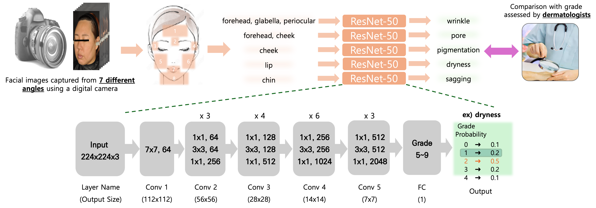

01
Original ArticleOpen AccessCoAtNet-4Classification + Regression
Artificial Intelligence Based Skin Analysis Models for Predicting Visual Grades and Device Measured Physiological Values From Facial Images
02
- 22 ± 2 °C / 50 ± 5 % RH
- Nikon D2X + strobe booth
- Samsung Galaxy Tab A8
- IRBIECK(1)-IRB-202307-102-06
- DSLR — 7
- Tablet / Phone — 3
| 14–19 | 55 | 55 | 110 |
| 20–29 | 99 | 99 | 198 |
| 30–39 | 99 | 99 | 198 |
| 40–49 | 99 | 99 | 198 |
| 50–59 | 99 | 99 | 198 |
| 60–69 | 99 | 98 | 197 |
| 550 | 549 | 1,099 |
03
| 0–6 | ||
| 0–6 | ||
| 0–6 | ||
| 0–5 | ||
| 0–5 | ||
| 0–5 | ||
| 0–4 | ||
| 0–6 |
- Corneometer CM825
- Cutometer MPA 580
- PRIMOS Lite
- VISIA-CR 2.3
04

- BackboneCoAtNet-4 (CNN + Transformer)
- 1,536-d
- FC → Softmax
- FC → scalar
- Class-Balanced Focal (β=0.999, γ=2)
- Huber
- OptimizerAdam
- Learning rate1 × 10⁻⁴ → 1 × 10⁻⁶ (cosine)
- Warm-up
- Epochs100
- Batch size8 (CoAtNet-4)
🧷
05
| MAE ↓ | Pearson r ↑ | |||
|---|---|---|---|---|
| 0.61 | 50.3 | 92.8 | 0.86 | |
| 0.71 | 45.4 | 89.8 | 0.87 | |
| 0.64 | 49.2 | 91.9 | 0.86 | |
| 0.51 | 58.7 | 97.0 | 0.77 | |
| 0.59 | 50.5 | 95.1 | 0.80 | |
| 0.60 | 50.8 | 94.5 | 0.61 | |
| 0.56 | 55.6 | 94.0 | 0.25 | |
| 0.62 | 51.0 | 91.1 | 0.83 |
0.00.51.0
| Model | MAE ↓ | Pearson r ↑ | ±1 % | ±2 % | |
|---|---|---|---|---|---|
| CoAtNet-4 | 0.60 | 0.82 | 51.15 | 93.26 | 99.43 |
| ResNet-50 | 0.63 | 0.79 | 50.90 | 91.52 | 98.86 |
| EfficientNet-B0 | 0.65 | 0.76 | 49.50 | 89.80 | 98.32 |
| MobileNetV3-Large | 0.69 | 0.72 | 48.05 | 87.87 | 97.60 |
06
-
🔑
-
{$ROOT} ├── checkpoint/ │ ├── class/ │ └── regression/ │ └── 1st_cnn/ │ └── save_model/ ├── dataset/ │ ├── img/ # raw facial images from AI-Hub │ ├── label/ # AI-Hub label json │ ├── split/ # train / val / test split json │ └── cropped_img/ # output of img_crop.py └── tool/ ├── img_crop.py ├── main.py └── test.py -
python tool/img_crop.py
-
python tool/main.py --name "checkpoint_name" --mode class # visual grades / 육안 평가 python tool/main.py --name "checkpoint_name" --mode regression # device values / 기기 측정값
-
python tool/test.py --name "checkpoint_name" --mode class python tool/test.py --name "checkpoint_name" --mode regression
ℹ️
07
@article{lee2026skin,
title = {Artificial Intelligence Based Skin Analysis Models for Predicting
Visual Grades and Device Measured Physiological Values From Facial Images},
author = {Lee, Eunyoung and Lee, Jeongho and Kim, Nahee and Na, Junchae
and Park, Byungcheol and Choi, Sang-Il},
journal = {Skin Research and Technology},
volume = {32},
number = {9},
pages = {e70375},
year = {2026},
doi = {10.1111/srt.70375}
}
2026
Skin Research and Technology 32(9), e70375 · SCIE